Disorders of Growth: Normal Growth & Short Stature
- Measure properly, plot it, and calculate the mid-parental height first. Boys: (mom + dad + 13 cm) ÷ 2. Girls: (mom + dad − 13 cm) ÷ 2. Lots of "short" kids are just growing along their parents' line.
- Short stature = height below the 3rd percentile (2 SD or more below the mean). The number that really worries you is growth velocity: under 4.5 cm/yr between age 4 and puberty, or crossing percentiles.
- Normal growth velocity = normal variant. Familial short stature: bone age normal, puberty on time, short parents. Constitutional delay: bone age delayed, puberty late, a parent who was a late bloomer.
- Look for general pediatric causes first (poor nutrition, celiac, Crohn's, kidney disease, genetic syndromes). In these, weight drops first and height follows.
- Endocrine causes are rare. The clue is a short, chubby child: weight is kept or rising while height falls off. GH deficiency is the most common one. Every short girl gets a karyotype, because short stature may be the only sign of Turner syndrome.
Learning Objectives
- Describe normal growth during childhood.
- Identify normal variants of growth in childhood.
- Recognize common general pediatric causes of short stature.
- Identify the most common endocrine causes of short stature.
- Identify common genetic causes of short stature.
- Describe the clinical features and complications of Turner syndrome.
This is Dr. Gallego's second lecture of the week. The first, 3.4 Abnormalities of Puberty, already covers Turner syndrome as a cause of delayed puberty. This lecture looks at Turner as a cause of short stature. The GH axis itself is on the pituitary page, from the "too much GH" side.
Normal Growth: Three Phases
| Phase | What drives it | How fast |
|---|---|---|
| Infancy | Mostly nutrition. Thyroid hormone and bone metabolism help | Fastest: about 24 cm in year 1, then 10 cm in year 2 |
| Childhood | Growth hormone is the main driver. Thyroid hormone and nutrition still matter | Slow but steady: about 5–6 cm/yr (4.5–6 cm/yr from age 4 to 10). The longer this phase lasts, the taller the final height |
| Puberty | Sex steroids plus bigger, more frequent GH pulses | The growth spurt: girls 8–12 cm/yr, boys 10–14 cm/yr |
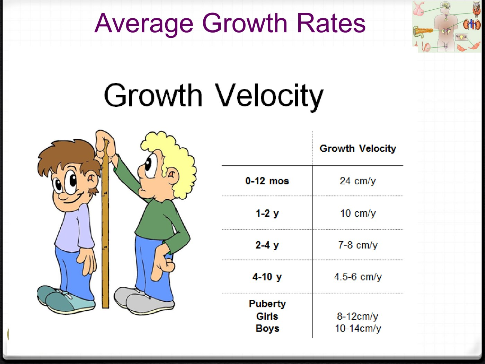
Growth velocity by age. Remember 24 → 10 → 7–8 → 4.5–6 cm/yr. Boys have the bigger spurt. From the lecture.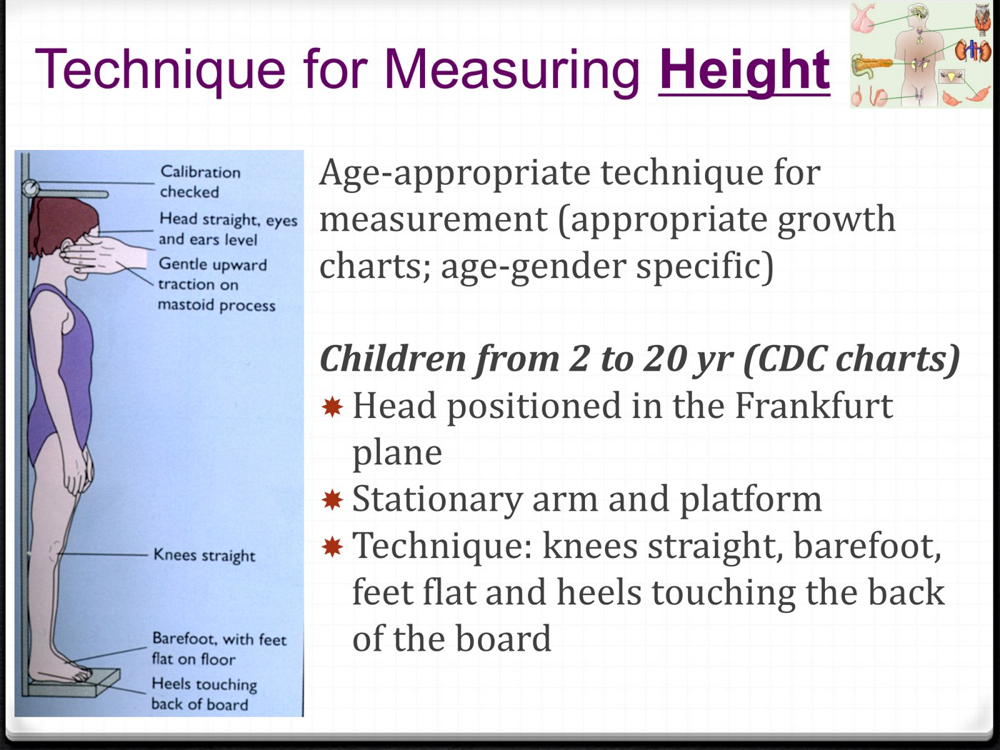
Measure it right. Over 2 years: standing height on a stadiometer, barefoot, heels to the board, head in the Frankfurt plane. Under 2: lying length on a measuring board. Use the age- and sex-specific chart.How to Evaluate Growth: Four Questions
Mid-parental height
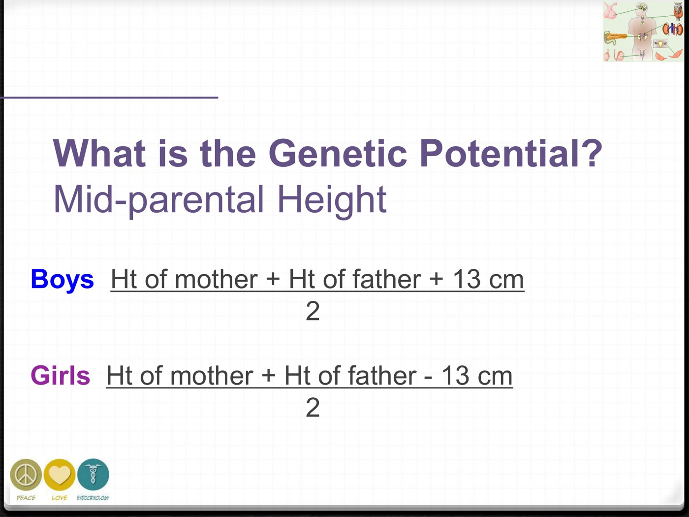
The formula. The 13 cm is the average adult height difference between men and women. Add it for a boy, subtract it for a girl.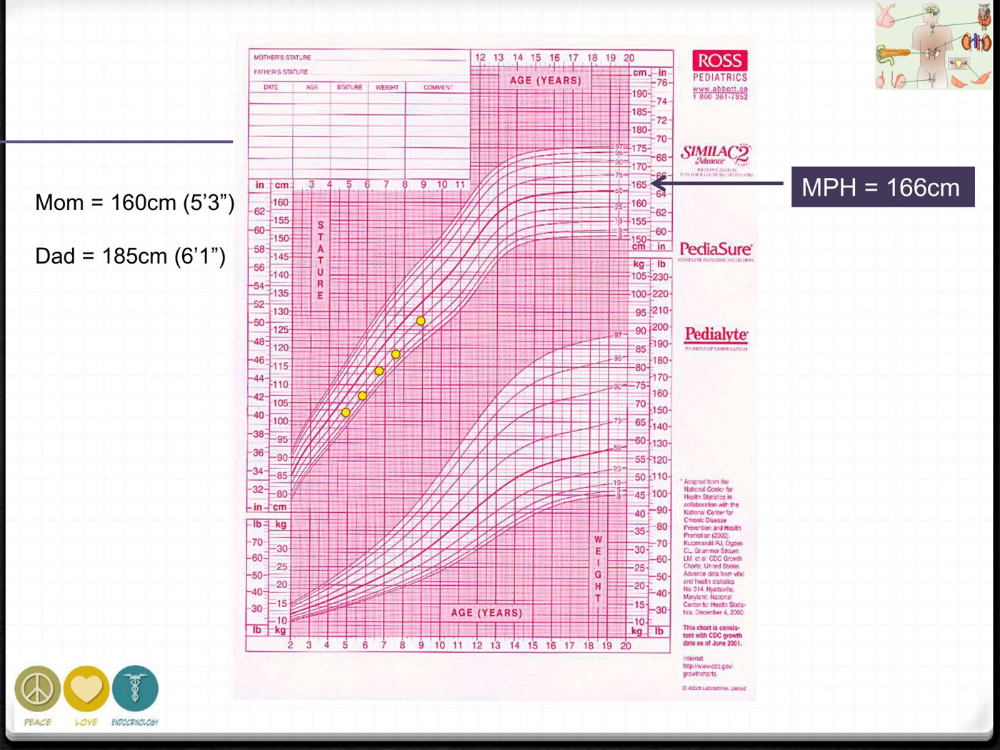
The lecture's example, for a girl: mom 160 cm, dad 185 cm. (160 + 185 − 13) ÷ 2 = 166 cm. Mark it at the adult end of the chart and see whether her curve is heading there.Dr. Gallego's own warning: many referrals for short stature are children growing exactly where their parents' heights say they should. Calculate the mid-parental height before you refer.
Height age and bone age
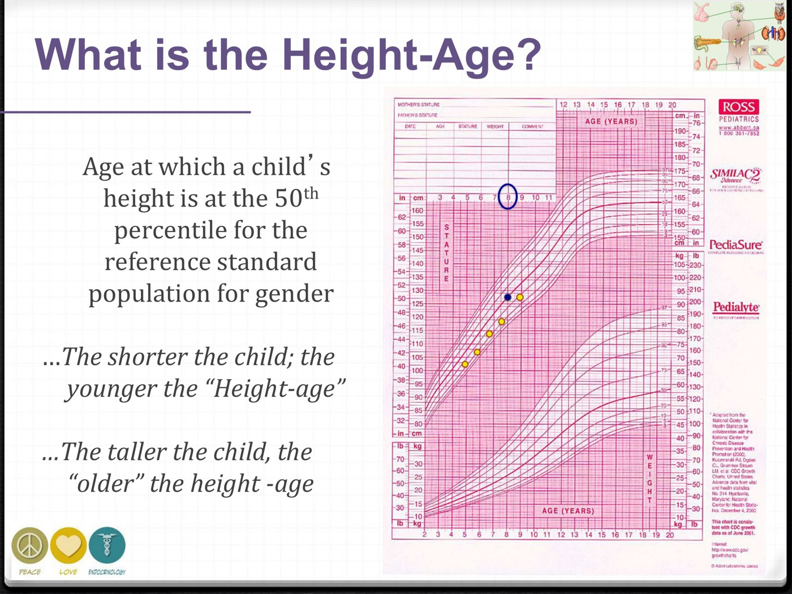
Height age. Slide the child's height across to the 50th percentile line and read off the age. The lecture's 9-year-old has a height age of 8.![Slide titled What is the Growth Potential? Bone age, with hand X-rays of a boy aged 8 and a boy aged 14, and a table: delayed bone age with constitutional delay of growth and puberty, nutritional causes, chronic disease and growth hormone deficiency; normal bone age with familial short stature and Turner syndrome; advanced bone age with precocious puberty and hyperthyroidism. Text: bone age estimates skeletal maturity from a single X-ray of the left wrist based on the bones and growth plates; delayed or advanced bone age might suggest growth problems, not always; normal is usually plus or minus 1 year.](../../../../assets/images/week-3/growth-disorders/bone-age.jpg) Bone age. One X-ray of the left hand and wrist. Normal is within ± 1 year of the real age. The table on the slide is worth learning (below).
Bone age. One X-ray of the left hand and wrist. Normal is within ± 1 year of the real age. The table on the slide is worth learning (below).
| Bone age | Think of | Why |
|---|---|---|
| Delayed | Constitutional delay, poor nutrition, chronic disease, GH deficiency (and hypothyroidism) | The whole child is running on a slower clock, so growth is still "available" |
| Normal | Familial short stature, Turner syndrome | The skeleton is maturing on time; the child is just built small |
| Advanced | Precocious puberty, hyperthyroidism | Sex steroids (with GH) push the growth plates to mature, and close, early |
When Should You Worry?
| Red flag | Cut-off from the lecture |
|---|---|
| Low growth velocity | From age 4 to puberty: less than 4.5 cm/yr |
| Crossing percentiles | Crossing lines on the chart after 18 months and before puberty. Crossing is normal in the first 18 months, and upward crossing is expected in the pubertal spurt |
| Far below genetic potential | More than 2 SD below the mid-parental height |
| Short stature (the definition) | Height 2 SD or more below the mean, i.e. below the 3rd percentile |
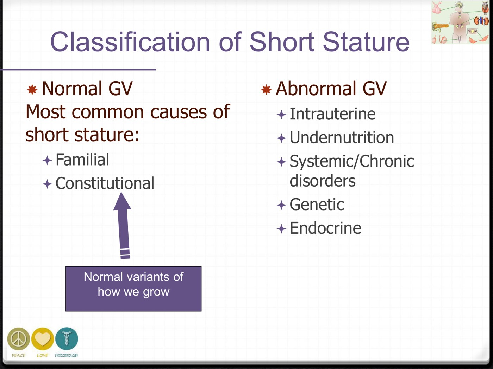
Normal Variants
Short, but growing at a normal speed. Not a disease.
Familial Short Stature vs Constitutional Delay
| Familial short stature (FSS) | Constitutional delay of growth and puberty (CDGP) | |
|---|---|---|
| Height | At or below the 3rd percentile | At or below the 3rd percentile (weight too) |
| Growth velocity | Normal (maybe low-normal) | Normal (maybe low-normal) |
| Puberty | On time | Late |
| Bone age | = chronological age | Delayed, closer to the height age |
| Family | Short parents: the child tracks their target | A parent who was a late bloomer |
| Final height | Short, but on the parental target | Normal: they catch up late |
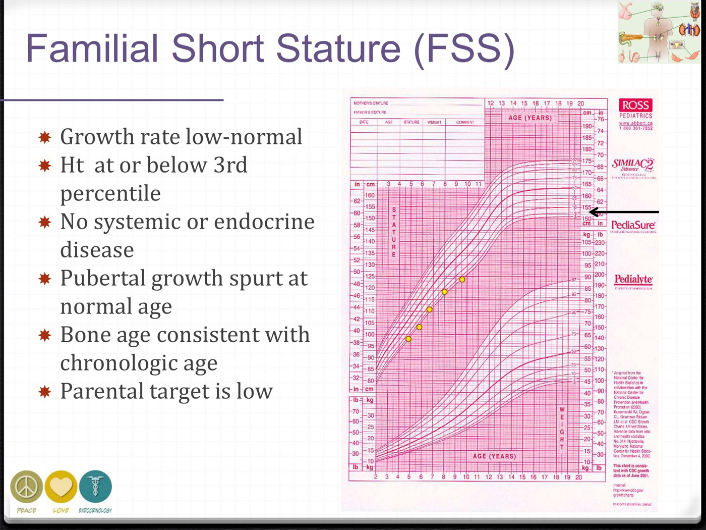
FSS: the child runs along the 3rd percentile, parallel to the lines, straight into a low parental target. Bone age matches the real age.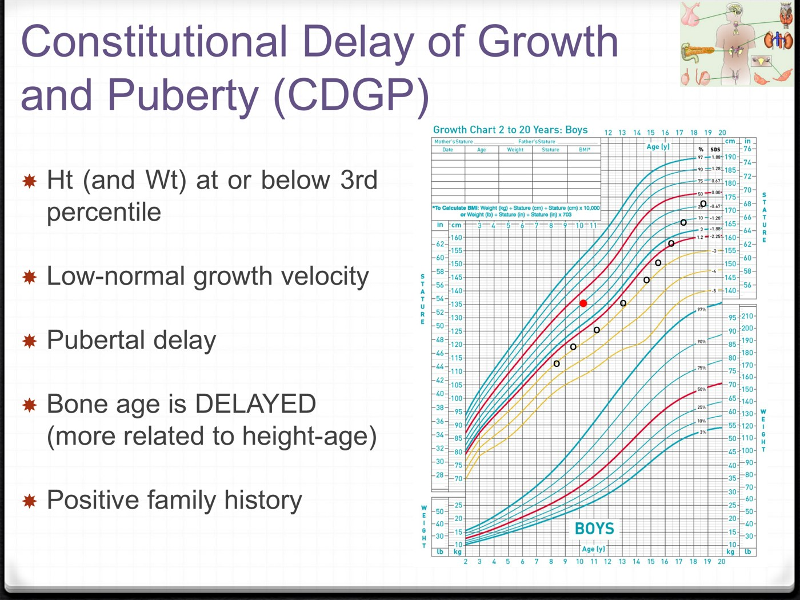
CDGP: low all through childhood, then a late spurt carries the child up toward the normal range. The bone age is delayed, so the growing time is still there.The one-line test: bone age. On time means familial short stature. Delayed means constitutional delay. The delayed-puberty side of CDGP is covered in 3.4.
General Pediatric Causes
Rule these out before you think about hormones. They are far more common than endocrine disease.
Small for Gestational Age, Nutrition and Chronic Illness
| Cause | Key points |
|---|---|
| SGASmall for gestational age: born smaller than expected for how many weeks along the pregnancy was. The lecture calls it intrauterine growth restriction. (intrauterine) | Ask about maternal infection, smoking, alcohol, systemic illness (e.g. type 1 diabetes), fetal malnutrition, placental insufficiency. Most SGA babies catch up by age 2. About 10% do not. That is a pathological growth pattern and an indication for GH |
| Not enough in | Mechanical problems (cleft palate), psychosocial deprivation, eating disorders |
| Not absorbed | Celiac disease, Crohn's disease, liver or pancreatic disease, lactose intolerance |
| Chronic illness | Chronic kidney disease, rheumatologic disease, cyanotic congenital heart disease, cystic fibrosis, asthma, malignancy, immunologic disease |
Genetic Syndromes and Skeletal Dysplasias
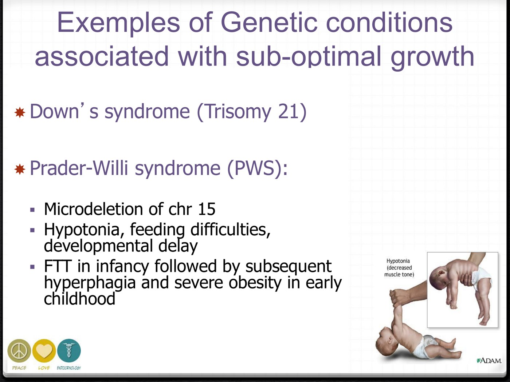
Down syndrome and Prader–Willi syndrome. PWS has two phases: a floppy, poorly feeding baby who fails to thrive, then hyperphagia and severe obesity from about age 3–5.![Slide titled Other Genetic syndromes with effects on Growth: Noonan syndrome with short stature, congenital heart disease especially pulmonary stenosis, delayed speech or motor milestones; Silver-Russell syndrome with severe IUGR and postnatal growth retardation, triangular face and prominent forehead; SHOX mutations, short stature homeobox-containing gene on the X chromosome, short stature, shorter forearms and lower legs, Madelung deformity; Turner syndrome to be discussed. A photograph shows forearms with Madelung deformity.](../../../../assets/images/week-3/growth-disorders/genetic-noonan-srs-shox.jpg) Noonan (think pulmonary stenosis), Silver–Russell (severe IUGR, triangular face, big forehead), and SHOX (short forearms and shins, Madelung deformity of the wrist).
Noonan (think pulmonary stenosis), Silver–Russell (severe IUGR, triangular face, big forehead), and SHOX (short forearms and shins, Madelung deformity of the wrist).
| Condition | Remember it by |
|---|---|
| Prader–Willi | Microdeletion of chromosome 15. Floppy infant with feeding trouble and FTT → hyperphagia and obesity by age 3–5. An approved GH indication |
| Noonan | Short stature + pulmonary stenosis + delayed speech/motor milestones |
| Silver–Russell | Severe IUGR and postnatal growth failure; triangular face, prominent forehead |
| SHOX mutation | Gene on the X chromosome. Short forearms and lower legs; Madelung deformity |
| Turner syndrome | One of the most common referrals for a short girl. Part 4 |
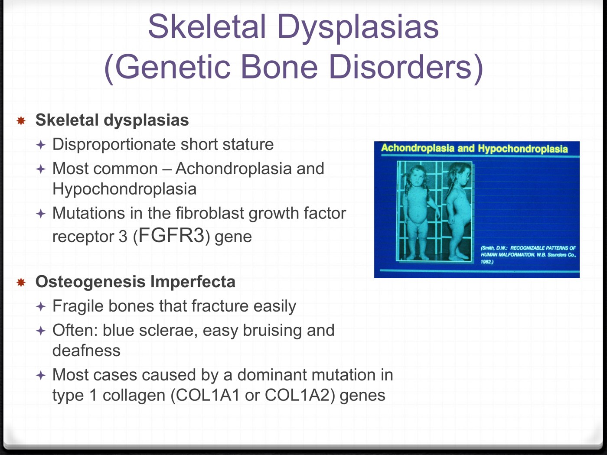
Endocrine Causes
Rare, but real. The clue is the weight: endocrine kids keep gaining weight while their height falls behind.
Growth Hormone Deficiency
- The most common endocrine cause of short stature. About 1 in 3,500–4,000 children.
- Caused by too little GHRH (hypothalamus) or a pituitary problem.
- It can be isolated or come with other pituitary hormone deficiencies.
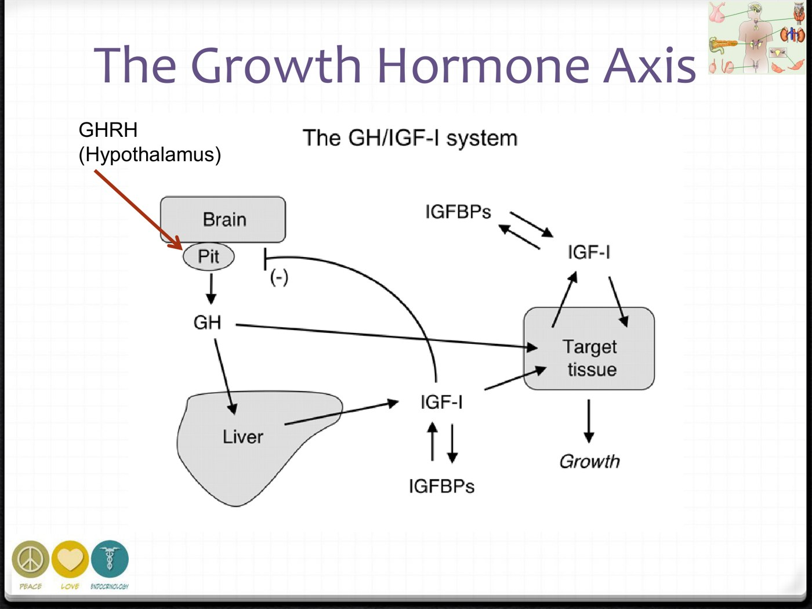
The GH axis. GHRH → GH → liver makes IGF-1 (and its binding proteins) → IGF-1 makes the growth plate grow. Most of GH's growth effect goes through IGF-1; only a little is direct.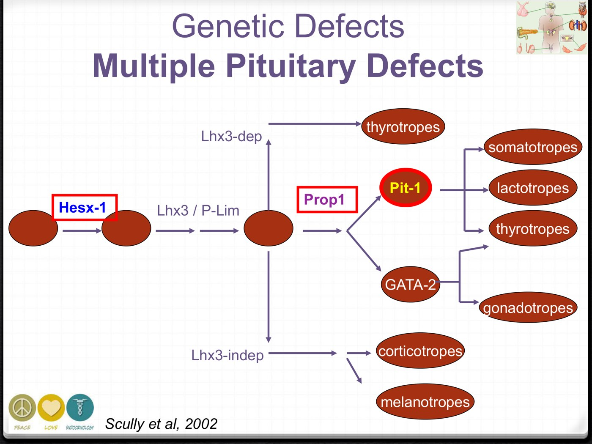
Where the gene breaks decides which hormones go. PIT-1 defect: lose somatotropes, lactotropes and thyrotropes, so GH + TSH + prolactin deficiency. PROP-1 sits upstream, so it also takes out the gonadotropins. Scully et al., 2002, from the lecture.Causes
| Type | Examples |
|---|---|
| Genetic | Mutations in GHRH, GH-1, PIT-1, PROP-1 · GH receptor defect = GH insensitivity (Laron syndrome) · IGF-1 gene deletions or mutations · IGF-1 receptor defects · growth plate disorders |
| Congenital structural | Ectopic or hypoplastic pituitary. Usually with midline defects and multiple pituitary deficiencies |
| Acquired | Sellar/parasellar tumours (e.g. craniopharyngioma) · cranial irradiation · head injury |
What congenital GH deficiency looks like
| When | Finding |
|---|---|
| At birth | Normal birth weight and length. Growth in the womb depends on maternal nutrition, not GH |
| Newborn | Neonatal hypoglycemia · prolonged jaundice (especially with TSH or ACTH deficiency too) · micropenis (especially if gonadotropins are also low) |
| After birth | Severe postnatal growth failure |
| Face and head | Poorly developed nasal bridge, prominent forehead · midline defects (high or cleft palate) · irregular, late teeth · late closure of the anterior fontanelle · high-pitched voice |
| Other | Thin hair, poor nail growth |
GH and cortisol are both counter-regulatory hormones: they raise blood sugar between feeds. A newborn without GH (and often without ACTH as well, when several pituitary hormones are missing) cannot defend their glucose. That is why the lecture pairs neonatal hypoglycemia with micropenis and prolonged jaundice: together they point to the pituitary in a baby who looks normal-sized at birth. The adrenal side of this is on the adrenal page.
Testing for GH deficiency
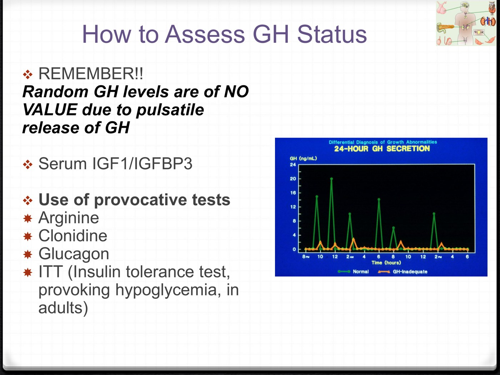
A random GH is worthless. GH comes in pulses (the graph), so a low value may just be between pulses. Use IGF-1 and IGFBP-3 as the screen and provocative tests (arginine, clonidine, glucagon) to confirm. No insulin tolerance test in children: severe hypoglycemia, seizures, even deaths.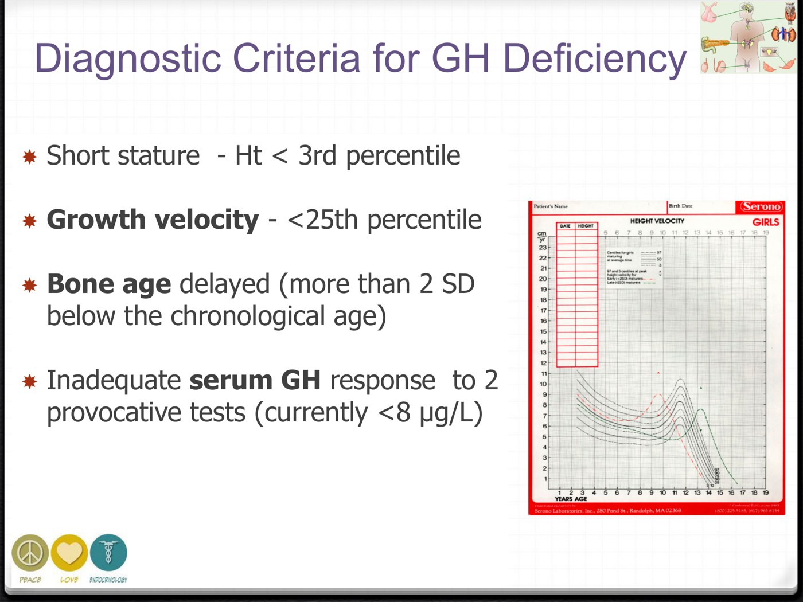
The four criteria: height < 3rd percentile · growth velocity < 25th percentile · bone age delayed > 2 SD · fails TWO stimulation tests (peak GH < 8 µg/L). Pass one and fail the other = not deficient.Treatment: recombinant GH
- Subcutaneous injection, 6–7 days a week, until growth is complete.
- Expensive (the slide says about US$10,000–30,000 a year). The dose is by weight and by indication; Turner syndrome uses a higher dose than GH deficiency.
- Indications from the lecture: GH deficiency · SGA with no catch-up by age 2 · Turner syndrome · Prader–Willi syndrome.
Other Endocrine Causes
Hypothyroidism: the lecture's case
A 12-year-old girl: her height velocity has dropped, but her weight has held on the 50th percentile. She has very dry skin, fatigue, hair loss and brittle hair and nails.
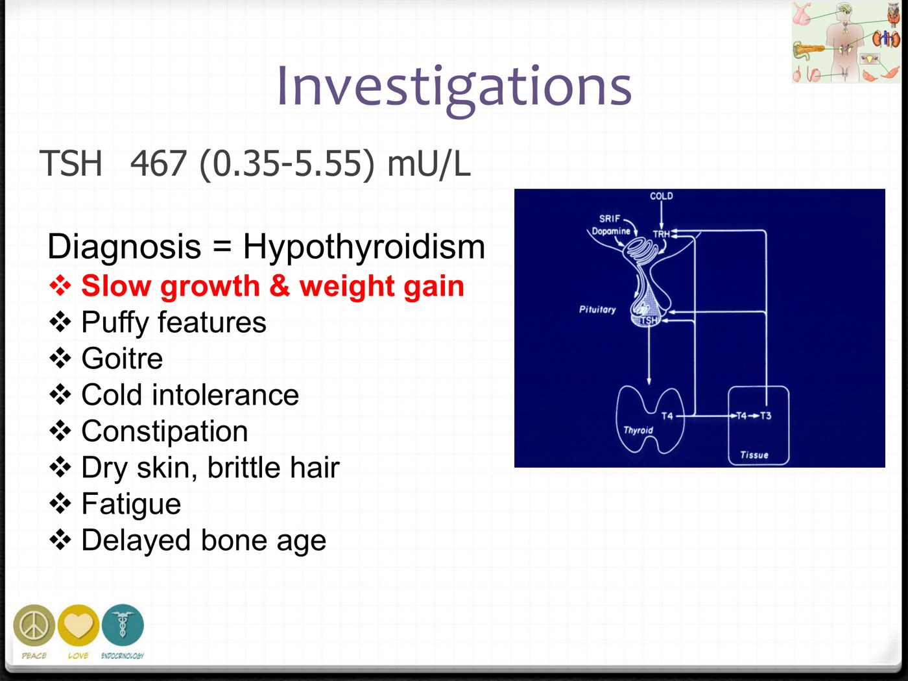
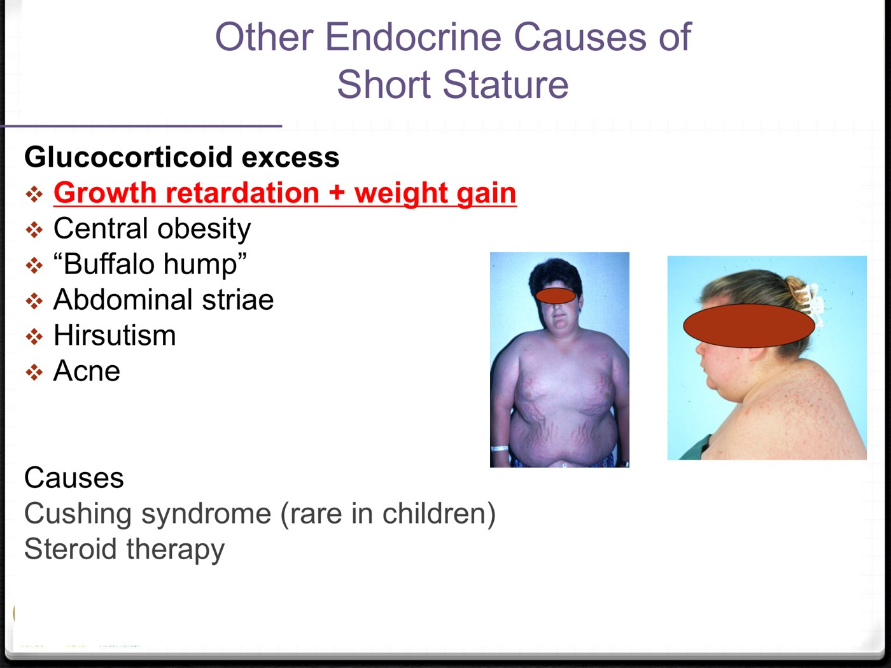
Too much glucocorticoid: growth stops while weight piles on (central obesity, buffalo hump, striae, hirsutism, acne). In children, true Cushing syndrome is rare. The usual cause is steroid therapy for another illness.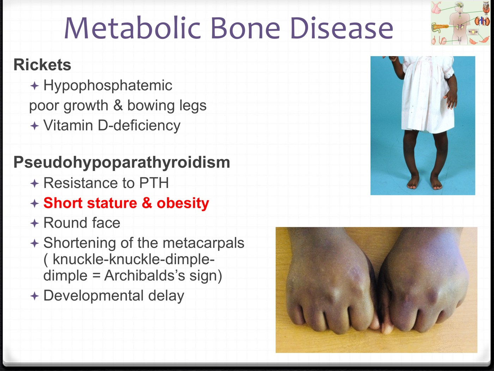
Rickets (vitamin D deficiency or hypophosphatemic): poor growth, bowed legs. Pseudohypoparathyroidism: PTH resistance, short and obese, round face, short 4th/5th metacarpals ("knuckle-knuckle-dimple-dimple", Archibald's sign). More on it in 2.2.A slip in the recording: on the audio, pseudohypoparathyroidism is described as resistance "to thyroid hormone". The slide is right: it is resistance to parathyroid hormone.
Read the Weight Line: The Take-Home Pattern
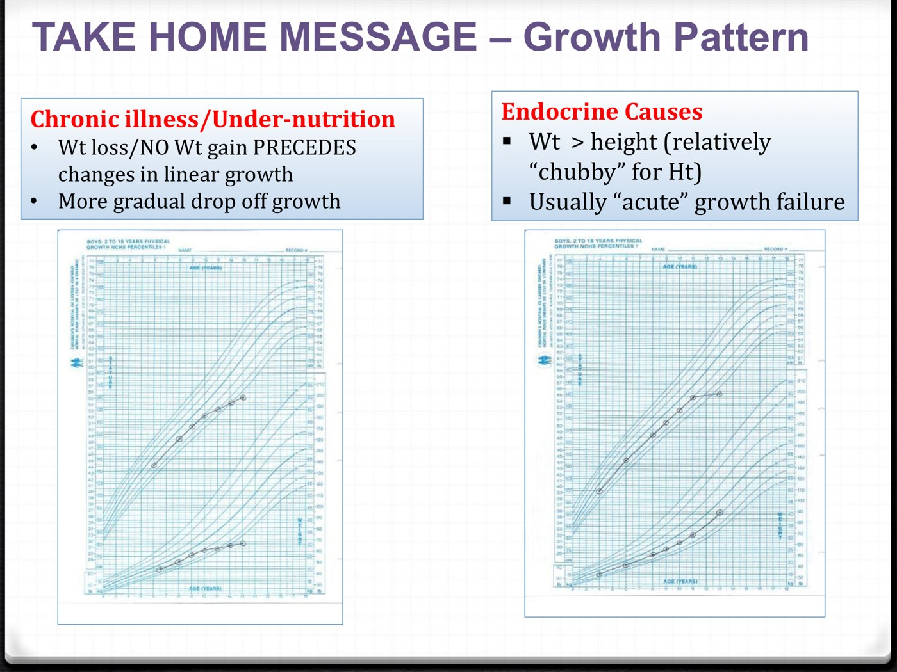
Turner Syndrome
The genetic cause of short stature you cannot miss in a girl.
Turner Syndrome and Growth
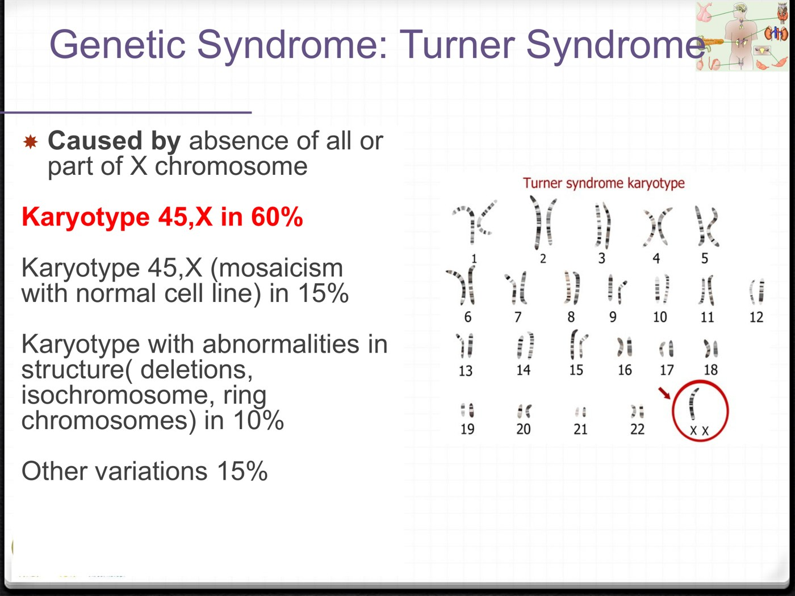
All or part of one X is missing. 45,X in 60% · mosaic in 15% · structural X changes in 10% · other 15%. About 1 in 2,000–2,500 newborn girls.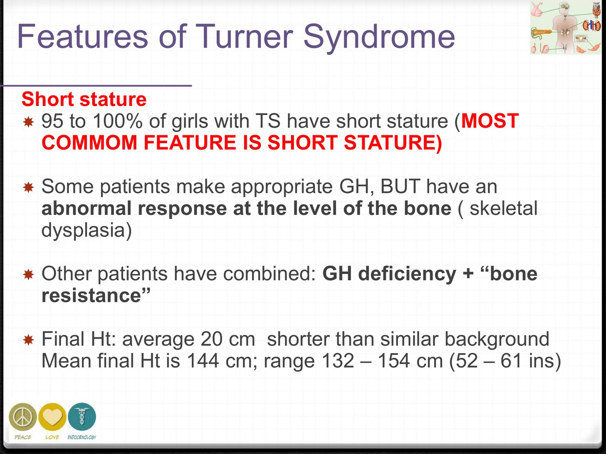
Short stature in 95–100%: the most common feature. Untreated, about 20 cm shorter than expected; mean final height 144 cm (132–154).- Why they're short: some make normal GH but the bone doesn't respond properly (a mild skeletal dysplasia). Others have low GH and bone resistance.
- Many girls are referred for short stature alone, with none of the classic dysmorphic features. So: karyotype any short girl.
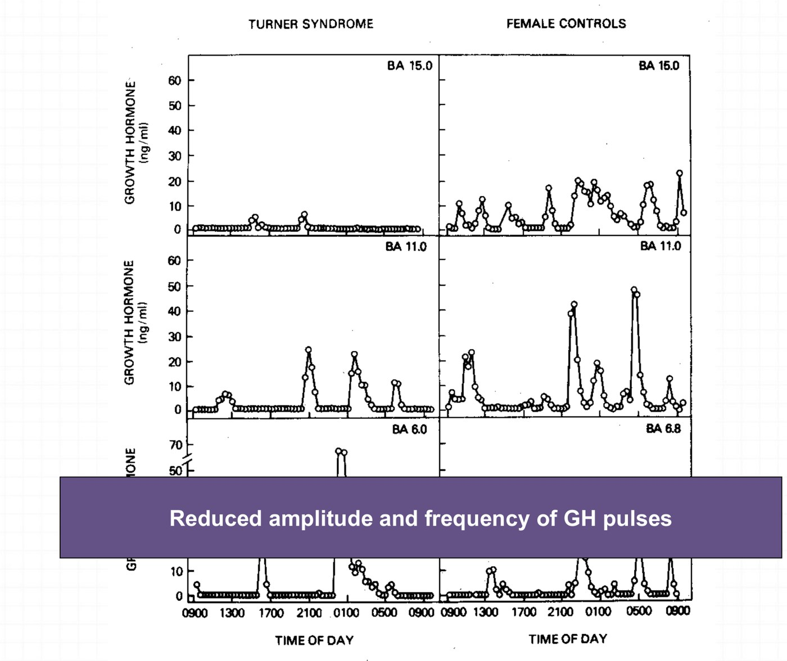
Fewer, smaller GH pulses in Turner girls (left) than in controls (right), at each bone age. That is the GH-deficiency part of the story.GH treatment in Turner
- Approved in Canada.
- Start as soon as growth failure shows, often around age 4–6.
- Gain: about 5–7 cm of adult height over about 8 years of treatment. Taller parents, better response.
- Dose: 0.35–0.375 mg/kg/week, roughly double the GH-deficiency dose.
The Rest of Turner Syndrome
| System | Features |
|---|---|
| Ovaries | Complete gonadal failure in 90% (streak ovaries). Thelarche 10–15%, menarche 1% (usually mosaics), pubarche 100% (the adrenals are normal), infertility > 99%. Most need estrogen replacement to go through puberty |
| Dysmorphic | Neck webbing, short 4th metacarpals, increased carrying angle (cubitus valgus), nail dysplasia |
| Heart | Congenital heart disease, especially coarctation of the aorta |
| Kidney | Renal anomalies, e.g. horseshoe kidney |
| Autoimmune | Thyroid disease (about 10%), type 1 diabetes, celiac disease |
| Metabolic | Metabolic syndrome and type 2 diabetes later |
| Other | Hearing problems · learning difficulties (non-verbal, arithmetic, visuospatial) · more ADHD |
| Newborn | Lymphedema of the hands and feet (the lymphatics are underdeveloped before birth; it improves over months), hypoplastic nails, webbed neck |
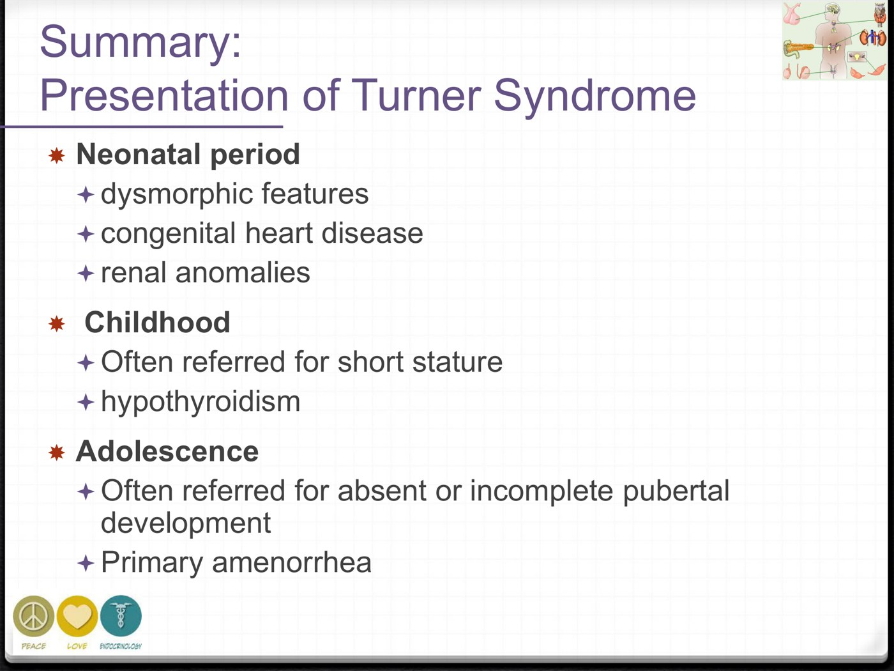
Putting It Together: Evaluating a Short Child
![Slide titled Summary: Evaluation of a Short Child with two boxes. History: developmental and growth; neonatal history (SGA, hypoglycemia, jaundice); family history, genetic potential (mid-parental height), history of delayed puberty; systems, chronic illness; endocrine, GH deficiency, hypothyroidism, Cushing. Exam: accurate height and weight; accurate growth curve; pubertal development; signs of chronic illness; signs of GH deficiency, thyroid disorder (goiter), Cushing; dysmorphism (Turner syndrome in girls); bone deformities; midline defects.](../../../../assets/images/week-3/growth-disorders/eval-history-exam.jpg) History and exam. The neonatal history matters (SGA, hypoglycemia, jaundice), and so do the parents' heights and pubertal timing. On exam: plot it, stage puberty, look for chronic illness, endocrine signs, dysmorphism and midline defects.
History and exam. The neonatal history matters (SGA, hypoglycemia, jaundice), and so do the parents' heights and pubertal timing. On exam: plot it, stage puberty, look for chronic illness, endocrine signs, dysmorphism and midline defects.
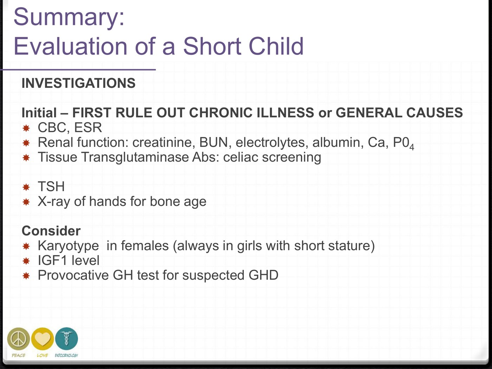
Investigations. First rule out general causes: CBC, ESR, renal panel, albumin, Ca, PO4, celiac screen (tTG). Then TSH and a bone age. Consider a karyotype (always in short girls), IGF-1, and GH stimulation tests (specialist).- Accurate measurement, plotted on a growth chart.
- Mid-parental height, from the parents' heights.
- Bone age to judge the growth potential.
- Look for general causes first (chronic illness).
- Endocrine causes are rare, and the child is usually small and "chubby, or at least not thin".
Built from Dr. Patricia Gallego's "Normal Growth and Short Stature" slide deck and her five recorded mini-lectures for the Disorders of Growth module. All slide images are taken from the deck; slides with photographs of children's faces (the untreated GH-deficiency brothers, the Turner treatment photo, the dysmorphic-feature photos) are left out, and the conditions they show are written into the tables instead. The short-child flowchart is drawn for these notes from the deck's summary slides. Where the recording and the slides disagree, the slides are followed and the difference is flagged: pseudohypoparathyroidism is PTH resistance, and congenital GH deficiency causes neonatal hypoglycemia. The mechanism behind neonatal hypoglycemia in hypopituitarism (loss of GH and cortisol counter-regulation) is standard physiology added to link the findings. Related lectures: 3.4 for constitutional delay and Turner syndrome in puberty; 3.2 for the GH axis and acromegaly.